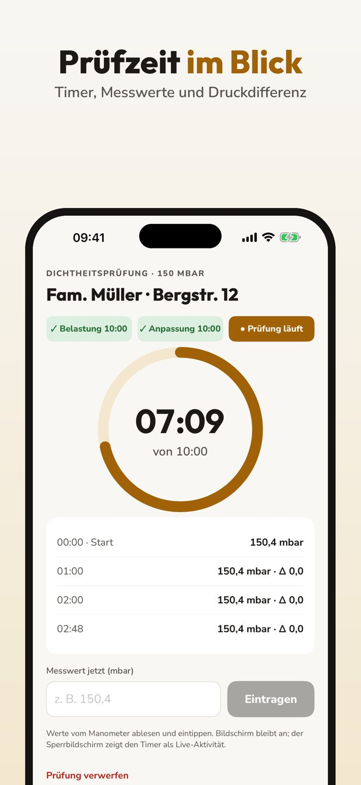
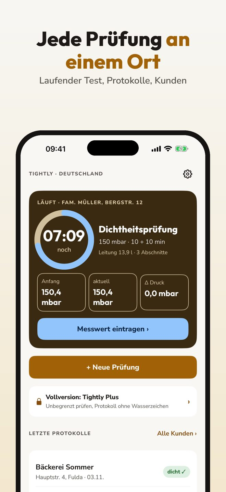
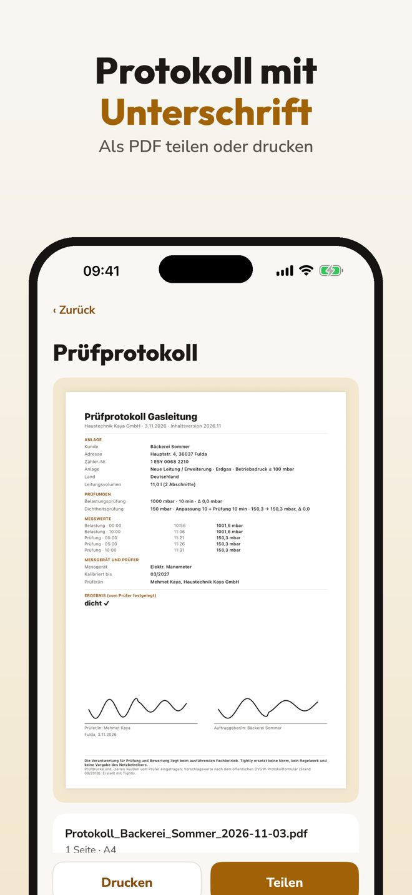

Gasleitung, Timer, Protokoll
Tightly begleitet SHK-Fachbetriebe in Deutschland und Österreich Schritt für Schritt durch die Prüfung von Gasleitungen: Belastungsprüfung, Dichtheitsprüfung und Gebrauchsfähigkeit bestehender Leitungen.



Eine komplette Prüfung mit Protokoll geht ohne Kauf. Tightly Plus ist ein Einmalkauf: unbegrenzt viele Prüfungen und das Protokoll ohne Wasserzeichen. Kein Abo.
Tightly ist ein Dokumentations- und Rechenhilfsmittel. Die Verantwortung für Prüfung und Bewertung liegt beim ausführenden Fachbetrieb; Tightly ersetzt keine Norm, kein Regelwerk und keine Vorgabe des Netzbetreibers.
Volume, timer, signed report
Tightly guides heating and plumbing companies in Germany and Austria through gas pipe tests: load test, tightness test and usability of existing pipes.
One complete test with report works without a purchase. Tightly Plus is a one-time purchase: unlimited tests and the report without watermark. No subscription.
Tightly is a documentation and calculation aid. Responsibility stays with the company doing the test; it does not replace any standard, rule book or network operator requirement.